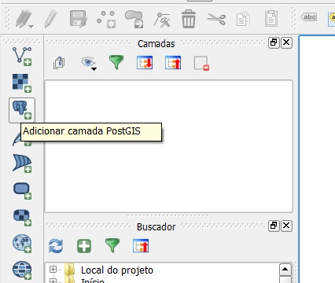
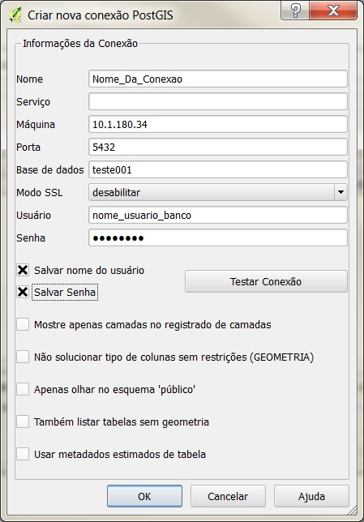
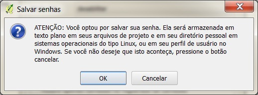
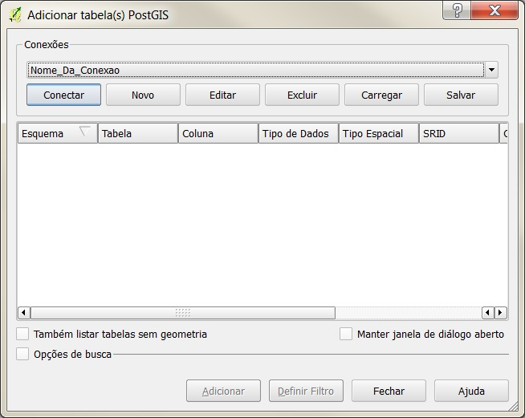

No caso de se desejar trabalhar com um BD já existente criado por outro usuário do servidor, a conexão com o banco pode ser realizada pela ferramente nativa do QGIS "Adicionar camada PostGIS".

No assitente de adição de camada PostGIS do QGIS, no grupo Conexões, são listadas no menu dropdown as conexões existentes. Clicar no botão Novo para configurar uma nova conexão.
Inserir no assitente o Nome_Da_Conexão desejada (este nome não influencia, servindo apenas à identificação pelo usuário), o endereço IP da Máquina do servidor, a Porta do BD, o nome da Base de dados e o Usuário e a Senha do banco. Atenção! Para poder usar o plugin DSG Tools para realizar o carregamento das classes, é necessário se armazenar o usuário e senha do BD!

Confirmar que se deseja armazenar usuário e senha do banco clicando em OK.

Após a configuração da conexão, selecioná-la no menu dropdown e clicar em Conectar. Fechar o assistente de adição de camada PostGIS e proceder com a ferramenta Carregar por Categoria do DSG Tools.
